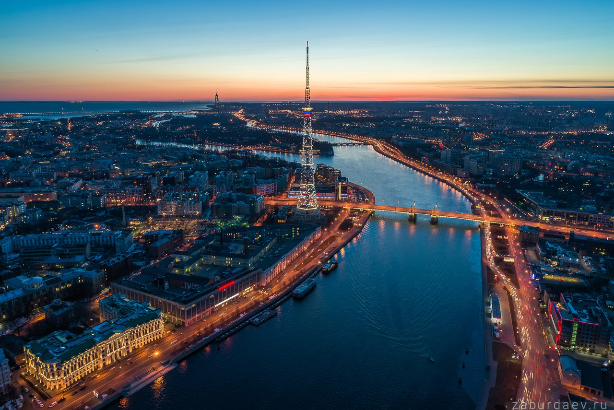

Санкт-Петербург

Санкт-Петербу́рг (с 18 августа 1914 года до 26 января 1924[7] года — Петрогра́д, с 26 января 1924 года до 6 сентября 1991 года — Ленингра́д) — второй по численности населения город России. Город федерального значения. Административный центр Северо-Западного федерального округа и Ленинградской области. Основан 16 (27) мая 1703 года царём Петром I. В 1712—1918 годах являлся столицей Российского государства.
Назван в честь Святого Петра, небесного покровителя царя-основателя, но со временем стал всё больше ассоциироваться с именем самого Петра I. Город исторически и культурно связан с рождением Российской империи и вхождением России в современную историю в роли европейской великой державы.
Расположен на северо-западе страны, на побережье Финского залива и в устье реки Невы. Граничит с Ленинградской областью.